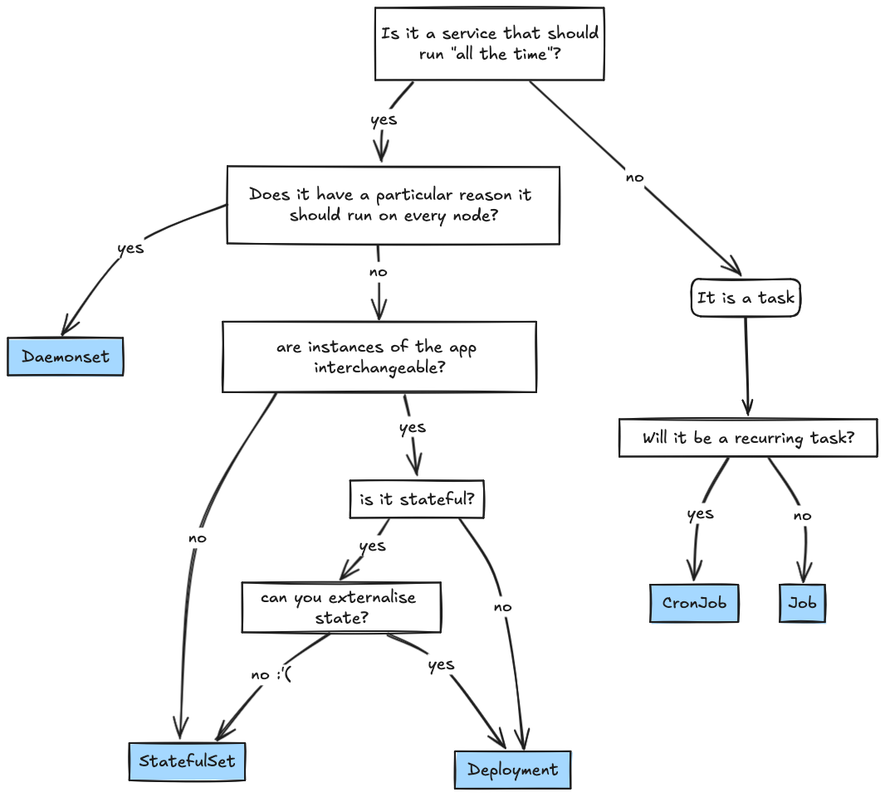

GRWM: Get Your Kubernetes Workload Ready for Production
By asking ourselves the right questions about a deployment’s needs we can effectively use the orchestration features provided by Kubernetes to ensure our workload is production ready and resilient. The focus will be on vanilla Kubernetes objects and best practices, but I’ll touch on adjacent topics as well - it’ll be a production ready list of TODOs for consideration.
In a part two I’ll step through configuring an example application.
Workload Management
How Should We Run It?
It’s important to understand the workload mangement options Kubernetes offers in order to select the appropriate controller for the service. What the workload itself actually does is a great starting point.
Most applications should run as Deployments. To get the most out of the “self-healing” powers and scaleability of k8s you should do your best to externalise any application state and allow your application instances to be totally interchangeable. There may be some “pre work” to do that can help prepare the application itself for deployment - read about The Twelve Factor App.
Kubernetes accommodates stateful workloads with StatefulSets and PersistentVolumes. These can be used for the ordinal pod numbers the workloads are assigned where the unique identity of the instance matters. And sometimes people leverage statefulSets because they just like the stable pod name and the replicaSet suffix and pod unique id from a Deployment type pod is just too annoying for them - and these people of course have no idea how poor a decision they are making otherwise they would be too shamed to do it!
Workloads that could be described as “tasks” will be suited to CronJobs or Jobs which deserve their own post on configuring.
A quick dirty flowchart:

Note: if you are not a cluster admin, disregard DaemonSets in the flow-chart. DaemonSets run a pod on every node, specialised system workloads like network plugins are an example of a workload that must be run as a DaemonSet.
Scheduling
To get scheduled on an appropriate node by kube-scheduler the workload should define what resources or other host requirements it needs.
- What are the application’s resource requirements? This includes CPU, memory and ephemeral storage. What would appropriate requests and limits be? Resource requests are used to appropriately schedule the workload on an accommodating node.
- Node requirements. To get scheduled on a particular type of node you have a number of levers available to you which are documented here:
- Are there specialised nodes available that this workload needs to use (high memory, or different architectures, need GPUs?)
- Should the workload be isolated from other workloads?
- OS?
- Is the workload “critical” or very high priority? Administrators may allow you to use PriorityClasses.
Application Config
What does the application need with respect to configuration? Your application probably needs some values that it requires to run as well as other environment particular configurations that differ between deployment environments - like where to reach an external service it calls and credentials.
There are multiple ways to expose these values to workloads by using native Kubernetes objects:
- Secrets are for small sensitive data. For decoupling sensitive data from code. NOTE THAT THEY ARE STORED UNENCRYPTED IN ETCD. So often secrets are not used for actually sensitive data. Consider other secret management services that integrate with k8s here.
- ConfigMaps are for non-confidential data, defined in key-value pairs. Great for things like nginx config files, or a set of configuration key pair values that you can mount as envVars for the application.
We can then configure the Deployment to consume these configuration objects:
-
You can mount these objects as volumes for your container to consume.
-
You can set Environment Variables by referencing an object like a Secret, ConfigMap. Additionally you can set environment variables directly (which you could template).
If there is a timing problem that means the value for something can’t be known until whenever - Init Containers are an option to do the work of helping create the configuration for the “main” app and updating a shared volume for the pod (just as an example).
Do go ahead and read the Kubernetes workload configuration best practices
Workload Lifecycle Management
Workloads running in Kubernetes get their resilience from the control loops that maintain a desired state for a workload. There’s a few configurations that are key for maintaining stability across normal functions like upgrades to the underlying host nodes, scaling up while making sure that on start-up the container only receives traffic when it is ready and other normal things, but also for unexpected behaviour either from the environment or the application itself. This section will help you understand how to manage workload lifecycles.
Start Up
Things to configure to make sure your application starts right and keeps going while it should.
If you application needs some special work done before it can begin, init containers are how you could ensure the application container(s) don’t start until a number of conditions are met. You can (in v1.29) also use init containers to run a Sidecar by setting restartPolicy: Always.
All containers should have Liveness, Readiness and Startup probes configured as needed, and great care should be given to these. These probes are used by Kubelet to determine the health and status of a container to know if it is ready to receive traffic or failed and should be restarted. If misconfigured they can make deployments difficult or leave an unhealthy workload running without much feedback or worse. Probes are essential for production workloads so do your due diligence.
Finish Up
Sometimes containers or nodes die and that’s just “the cloud” things are ephemeral and that’s fine and good, and you’ll rely on having a highly available configuration to manage that, but hopefully most of the time your workloads stop it’s because either:
- Less traffic triggers a scale down the deployment through a Horizontal Pod Autoscaler.
- Kubernetes upgrades require draining the node so it can be upgraded.
- The cluster is scaling down to save money yay, so the node is being drained.
For cases where there’s more control over shut downs we can make sure they go as smooth as possible by setting appropriate terminationGracePeriodSeconds for the application container and we should use Container Hooks, particularly preStop hooks which give us a way to close any long running requests or connections and terminate our application gracefully.
Leave yourself some good easy to read clues if the container does fail unexpectedly. Learn about terminationMessage configuration options. I think that terminationMessagePolicy being set to FallbackToLogsOnError is really underutilised! It enables you to capture a subset of the containers “last words” if it exited on error - maybe they’ll be helpful, maybe not, but it’s a great nice to have that’s highly visible on a kubectl describe of the pod and I really love this configuration but I’ve still not met anyone else who really employs it so I’m pretty sure it’s under appreciated. Read about terminationMessage customization.
Handle Change Smoothly
There’s a bunch of deployment strategies that are popular and ways to implement them in k8s like blue-green or whatever but let’s just look at the native things.
Make sure your objects will all behave “sanely” together while you deploy. Be mindful of if you configure a Pod Disruption Budget for your workload it also suits you well for while you’re rolling out a change to the deployment object. I’ve seen teams whose change was taking a very long time and they asked for help - their PDB had made their deployment’s RollingUpdate change go very slowly because they wanted an outrageous number of replicas and a very conservative disruption budget.
Being Reliable: High Availability, Fault Tolerance, Scaling etc.
- Run your workload with a high availability topology. See pod topology spread constraints as well as inter-pod affinity and anti-affinity to see how these powerful and flexible levers can achieve advanced scheduling preferences and rules - like not putting lots of pods on the same host, or cloud same availability zone or wherever you do or don’t want them, the levers are there.
- Scale, your production workload must scale. Decide if your workload benefits more from scaling horizontally or vertically (or both). Understand under what conditions the workload benefits from scaling and when to trigger it.
- HPA Horizontal Pod Autoscaler objects scale your workload horizontally - that is you get more copies of the workload. Ask your yourself is the workload memory bound? cpu bound? Great those are supported natively. If neither are ideal - like maybe queue length or response codes or something suite better, maybe you’ll need to work with cluster admins to use custom metrics and something like prometheus-adaptor to enable you HPA to scale based on queue length or whatever it is it makes sense for you to scale on.
note: when you define a HPA for a deployment, you should omit
spec.replicasbecause HPA will manage it, if you are adding a HPA to an existing deployment though, follow instructions in the documentation to take care in not causing an accidental change in your replica count.- VPA. I have never used Vertical Pod Autoscaling, and haven’t really had a workload that compelled me to advocate to install it - but it sounds cool. It allows you to scale on your resources. It’s not part of vanilla k8s so you’ll have to see if it is installed or enabled as a plugin in the cluster. Definitely explore if this is an option in your cluster!
Logging, Monitoring, Alerting and Hopefully Observability
This is highly contingent on the landscape of the environment so it’s really just an honorary mention because this is about getting a workload production ready and in production we should be able to know the status of our workloads without having to check them ourselves! But this is really a little outside the scope of configuring Kubernetes native objects…but it’s a reminder to learn about what logging, monitoring, instrumentation etc. options are available for you and how to use them!
Look at your platform/observability team’s documentation, hopefully they run some tools that allow you to either see some basic information about your workloads or maybe even allow you to expose and scrape metrics of your own (if you need to do that).
The gold standard for Kubernetes workload metrics is kube-state-metrics, kube-state-metrics is my best friend. If your cluster admins have exposed a subset of kube-state-metrics metrics for you like pod metrics, these are what you can use to configure alerts for things like pods that are constantly restarting, or in some sort of failed state and basically everything you could ever want to know. The cluster admins/platform owners will, I imagine be very happy to point you in the direction of what is available for you in your cluster environment.
Learn how to access your logs, directly from your pod is important for daily little things, but your cluster admins hopefully have some log aggregation set up perhaps in partnership with an observability team. Understand these and how to use the centralised logging service that’s (hopefully) available to you so you can benefit from structured logging. Depending on the ecosystem there are a number of tools and stacks that may be available for you to use to instrument your application and get the most out of your logs. I’m really interested in learning more about honeycomb at the moment and this instrumentation exercise looks neat.
Security
- Elect the correct pod security standard for your workload,
restrictedbeing best practice where possible. - Follow best practices for using secrets. Secrets in Kubernetes are not that secret and they’re namespace scoped. Your cluster admins may use an external service for sensitive data such as vault or integrate with a cloud platform’s secret service for more sensitive things. Make sure you understand what options are available to you for sensitive data your application needs.
- Configure appropriate seccom profile for the containers.
- If your admins are up-to-date with the recent Kubernetes versions you may be able to utilise appArmor.
- Image security: scan your images, target a specific tag don’t use
:latest.
Deploying Changes
Maybe there’s another post here but certainly we can explore some examples in the part two of this where we’ll set up an application start to finish, but some important mentions:
- Use some templating tooling to dry up your code: helm template, ktmpl (I love this little simple tool and was surprised it is not hugely popular), gotmpl etc. to plugin the values that differ between your environments.
- Use CICD tooling to automate your deployments, hopefully there’s a nice offering from your platform team and even some nice patterns to follow. Otherwise, you’ll have to roll your own - never make a habit of manually applying things to your cluster via kubectl commands in non emergent situations.
Backup and Disaster Recovery Planning
You aren’t production ready without understanding what kind of availability you want to try to provide and how you can recover from particular scenarios should things go awry. Define your SLIs, SLO, SLA’s etc. Really this post is for people who are running something in a cluster that other people manage, and just setting up the Kubernetes resources/shopping list of TODOs, but it’s important to mention DR.
In a part two post I’ll step through a concrete application.